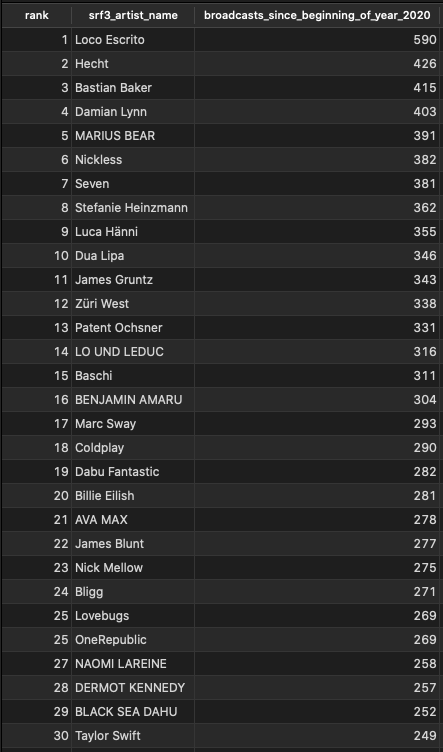
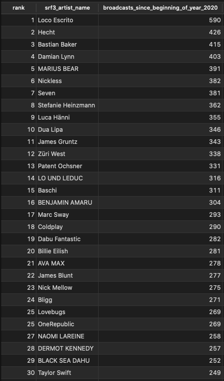

SRF3: Meistgespielte Künstler 2020 auf SRF3 per Ende August
Das Podest der meistgespielten Künstler von Januar bis Ende August 2020 sieht wie folgt aus?
- Loco Escrito mit 590 plays
- Hecht mit 426 plays
- Bastian Baker mit 415 plays

Das Podest der meistgespielten Künstler von Januar bis Ende August 2020 sieht wie folgt aus?
